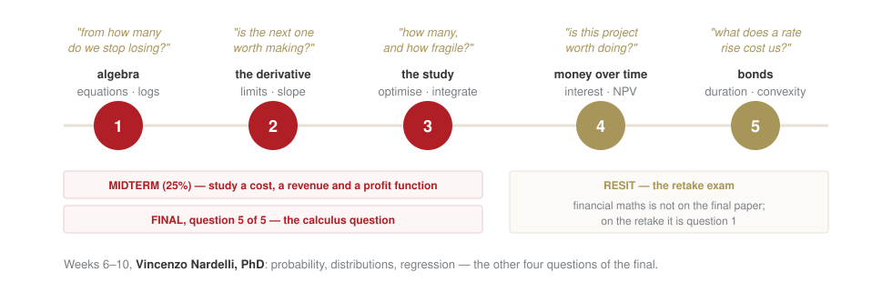
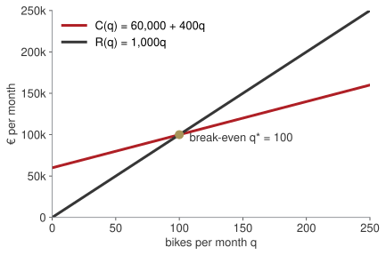
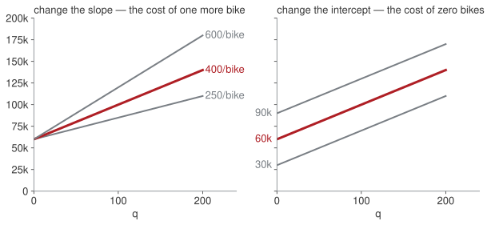
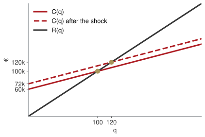
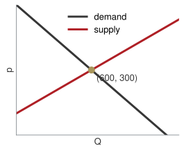
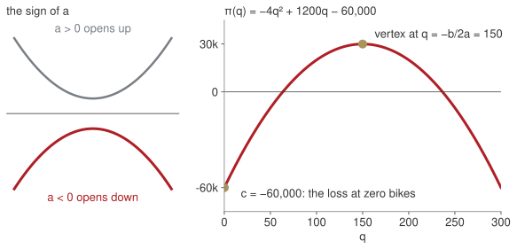
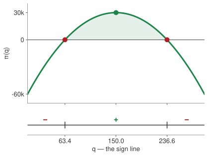
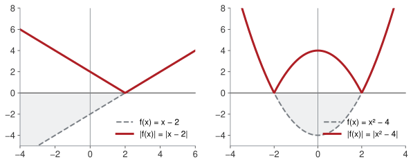
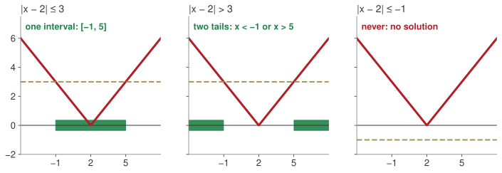

Revision of mathematics, told as business decisions
Week 1 · Thursday 24 September 2026 · 10:00–13:00
MBA03 Research & Quantitative Business Methods · European School of Economics, Florence
Who I am

Niccolò Salvini, PhD · Adjunct Professor
- Economics, Florence
- MSc, Statistical and Actuarial Sciences, Milan
- PhD, Healthcare Data Science, Rome
- Founder, Intuo — data pipelines and AI for companies
- Adjunct Professor — Università Cattolica, and ESE
Where the ten weeks go
| Wk | Date | What you will be able to do by hand |
|---|---|---|
| 1 | 24 Sep | equations, systems, quadratics, logs |
| 2 | 1 Oct | read a function; limits; the derivative |
| 3 | 8 Oct | study a function; optimise; integrate |
| 4 | 15 Oct | interest, discounting, NPV |
| 5 | 22 Oct | bonds, duration, convexity; mock exam |
| 6–10 | from 2 Nov | Vincenzo Nardelli, PhD — probability, statistics, regression |
Two things count.
Midterm (25%): a report to a Board built on the study of a cost, a revenue and a profit function. Due 1 Nov.
Final exam (75%): 3 hours, paper, calculator. One of five questions is pure calculus: integrals, limits, recovering a function from its derivative.
Every technique in this room is here because an assessment asks for it. I will tell you which one, every time.
The map — come back to this every week

How every session runs
10:00 · 15’Your homework, at the boardOne of you walks us through one exercise. From week 2.
10:15 · 5’Last week, in one minuteThe questions we answered, and the answers.
10:20 → 12:45Today’s blocksEach one: a business question and your bet → the picture → the technique → exercises on paper. Break at half time.
12:45 · 15’Take homeThree lines to remember, and the homework for next Thursday.
Homework is not graded. It is read, discussed at the board, and it is the best preparation for the midterm.
The shape of an exam item
Same form as the final, different numbers:
\int \frac{x^{5} - 3x^{3} + 2}{x^{2}}\,dx \lim_{x \to 1^{+}} \frac{(x-1)^{2}}{x - x^{2}} f'(x) = 6x^{2} - 2x,\quad f(1) = 4 \;\Rightarrow\; f(x) = ?
Today we do none of this. Today we make sure that when we get there, the algebra underneath — dividing term by term, factoring, solving for an unknown, handling a log — is not what slows you down.
Everything today is a question the founder of a small firm actually has to answer.
The case: Arno Bikes
| e-bike assembler, Florence | |
| Fixed cost | €60,000 per month (rent, salaries, insurance) |
| Variable cost | €400 per bike (parts, packaging) |
| List price | €1,000 per bike |
Four questions from the founder
Block AHow many bikes before we stop losing money?linear equations · systems
Block BHow many bikes should we make?quadratics
Block CHow long until revenue doubles?exponentials · logarithms
Block DIs this battery cell within spec?absolute value
Block A · linear equations and systems How many bikes before we stop losing money?
How many bikes a month before Arno Bikes stops losing money?
Two facts, written as two functions of the monthly quantity q:
C(q) = 60{,}000 + 400\,q what it costs to make q bikes
R(q) = 1{,}000\,q what selling them brings in
Bet before we compute
Write a number. Do not compute yet.
| bikes q | cost C(q) | revenue R(q) | |
|---|---|---|---|
| 50 | 80,000 | 50,000 | losing |
| 80 | 92,000 | 80,000 | losing |
| ? | even | ||
| 120 | 108,000 | 120,000 | making money |
| 150 | 120,000 | 150,000 | making money |
Break-even is where the two meet: R(q) = C(q)
Two lines and a crossing

1{,}000\,q = 60{,}000 + 400\,q 600\,q = 60{,}000 q^{*} = \frac{60{,}000}{600} = 100
Reading. €600 is the contribution of each bike. Break-even is fixed cost ÷ contribution.
How to read a line

C(q) = \underbrace{60{,}000}_{\text{intercept}} + \underbrace{400}_{\text{slope}}\,q
Intercept: the value at q = 0 — here, the rent you pay with the factory idle. Slope: what one more unit adds — here, the parts in one bike.
Move the price. Then raise the rent.
LAB · session.ipynb § A
- Bet: what price makes break-even 50 bikes? Then slide.
- The landlord raises fixed cost to €72,000. Before running: what happens to the cost line, and to the crossing?
Watch the slope and the intercept separately. Only one of them moved.
A cost shock is a parallel shift — remember this for the midterm

Same slope (€400 per bike), higher intercept.
New break-even: 1{,}000q = 72{,}000 + 400q \Rightarrow q^{*} = 120.
The midterm asks how a tariff on an input changes the cost and profit schedules. That is this picture with different names: a per-unit tariff changes the slope, a lump-sum cost changes the intercept.
The whole market: two facts, two unknowns
Across Tuscany, at a price p:
- buyers want Q_d = 1200 - 2p bikes
- sellers offer Q_s = -300 + 3p bikes
Bet before we compute
At what price do buyers want exactly what sellers offer?
Set them equal (substitution):
1200 - 2p = -300 + 3p \;\Rightarrow\; p^{*} = 300,\; Q^{*} = 600
One equation is one fact about the business. Two unknowns need two facts.

By elimination: Q + 2p = 1200 and Q - 3p = -300; subtract to get 5p = 1500. Same answer.
An equation answers “where”. An inequality answers “from where on”.
1{,}000q = 60{,}000 + 400q \;\Rightarrow\; q = 100 \qquad\qquad 1{,}000q \geq 60{,}000 + 400q \;\Rightarrow\; q \geq 100
The first is the break-even point. The second is the condition for not losing money — and it is the second one a Board asks for.
One rule, and it is the only one that costs marks: multiplying or dividing an inequality by a negative number reverses it.
D1, D2, D3b (core) — D3 (stretch)
PAPER · drills.md
10 minutes. Show all work, exam style. I walk round and look at your working.
Four questions from the founder
Block AHow many bikes before we stop losing money?linear equations · systems
Block BHow many bikes should we make?quadratics
Block CHow long until revenue doubles?exponentials · logarithms
Block DIs this battery cell within spec?absolute value
Block B · quadratics How many bikes should we make?
Price responds to volume
The founder learns: at €1,000 she sells 150 bikes. Every €4 off the price sells one more bike; every €4 on it sells one fewer, so at €1,600 she sells none. That is the line:
p(q) = 1600 - 4q
Revenue is price × quantity: a rectangle whose sides pull in opposite directions.
Bet before we compute
Does selling more always bring more revenue? Yes / no, and roughly where it stops.
The revenue rectangle sweeps out a parabola
Revenue, cost, profit
R(q) = (1600 - 4q)\,q = 1600q - 4q^{2} \pi(q) = R(q) - C(q) = -4q^{2} + 1200q - 60{,}000
Where is profit zero? First move, always: divide out the common factor.
q^{2} - 300q + 15{,}000 = 0 q = \frac{300 \pm \sqrt{300^{2} - 4\cdot 15{,}000}}{2} = \frac{300 \pm \sqrt{30{,}000}}{2} \approx 63.4,\;\; 236.6
How to read a parabola

y = a\,q^{2} + b\,q + c
a decides the shape: below zero, a hill with a top — a profit that peaks. c is the value at q = 0. The top sits at q = -b/2a, halfway between the two roots.
Try it: move a, b and c
Make a positive, then negative. Slide c and watch the whole curve move up and down. Find a setting with no roots: what happens to the profitable window?
The discriminant decides before you compute
| b^{2} - 4ac | roots | in business |
|---|---|---|
| > 0 | two | a profitable window |
| = 0 | one | a single break-even |
| < 0 | none | no viable scale |
Where is profit positive? A downward parabola (a<0) is positive between its roots:
63.4 < q < 236.6

The sign line. In the midterm it is called “the sign of the profit function”.
Push the fixed cost up. Where do the two break-evens merge?
LAB · session.ipynb § B
- Bet on the fixed cost at which the roots become one. (Hint: what is the profit at the vertex now?)
- Then push further. What does “no roots” look like, and what does it mean for the founder?
The top of the hill, for now
Vertex of \pi(q) = -4q^{2} + 1200q - 60{,}000:
q_{v} = -\frac{b}{2a} = -\frac{1200}{-8} = 150 \qquad \pi(150) = 30{,}000
This formula works for parabolas only.
Next week you get a tool that finds the top of the hill for any curve — a log revenue, a cubic cost, anything. It is called the derivative, and it is the reason this course exists.
Board sentence
A quadratic has two roots, one, or none, and the discriminant tells you which before you compute. In business: a profitable window, a single break-even, no viable scale.
D4, D5 (core) — D6 (stretch: factor and cancel)
PAPER · drills.md
10 minutes. Show all work, exam style. I walk round and look at your working.
Four questions from the founder
Block AHow many bikes before we stop losing money?linear equations · systems
Block BHow many bikes should we make?quadratics
Block CHow long until revenue doubles?exponentials · logarithms
Block DIs this battery cell within spec?absolute value
Block C · exponentials and logarithms How long until revenue doubles?
Revenue €1.2M, growing 12% a year
R(t) = 1.2 \cdot 1.12^{\,t} \quad \text{(€M, } t \text{ in years)}
Each year revenue is multiplied by 1.12. The euros added grow every year: 0.14, then 0.16, then 0.18…
Linear growth adds the same amount each year. Exponential growth adds the same percentage.
Bet before we compute
When does revenue reach €2.4M? Write a number of years.
| year t | revenue (€M) | added |
|---|---|---|
| 0 | 1.20 | |
| 1 | 1.34 | +0.14 |
| 2 | 1.51 | +0.16 |
| 3 | 1.69 | +0.18 |
| … | … | |
| ? | 2.40 |
Linear versus exponential growth
The unknown is in the exponent
1.2 \cdot 1.12^{\,t} = 2.4 \quad\Longrightarrow\quad 1.12^{\,t} = 2
No algebra so far reaches t. That is what a logarithm is for: it answers “to what power?”
\ln\!\left(1.12^{\,t}\right) = \ln 2 \;\Longrightarrow\; t\,\ln 1.12 = \ln 2 \;\Longrightarrow\; t = \frac{0.6931}{0.1133} \approx 6.1 \text{ years}
| rule | reading |
|---|---|
| \ln(ab) = \ln a + \ln b | growth factors multiply, their logs add |
| \ln(a/b) = \ln a - \ln b | a ratio of revenues becomes a difference |
| \ln a^{k} = k \ln a | k years of the same growth: the exponent comes down |
| \log_{b} x = \ln x / \ln b | any base through the calculator’s \ln |
D7, D8 (core) — D9 (stretch: 5e^{0.03t} = 8)
PAPER · drills.md
12 minutes. Show all work, exam style. I walk round and look at your working.
Four questions from the founder
Block AHow many bikes before we stop losing money?linear equations · systems
Block BHow many bikes should we make?quadratics
Block CHow long until revenue doubles?exponentials · logarithms
Block DIs this battery cell within spec?absolute value
Block D · absolute value Is this battery cell within spec?
This morning’s delivery
Every Arno bike carries one battery cell. The motor maker’s spec: 500 Wh, give or take 15. A cell outside that range gives the rider a wrong range estimate and voids the warranty, so it goes back to the supplier.
Four cells from this morning’s delivery, measured on the right.
Bet before we compute
Which ones go back? Then write the acceptance rule as one inequality, not two.
| cell | measured | keep? |
|---|---|---|
| #1 | 483 Wh | |
| #2 | 497 Wh | |
| #3 | 512 Wh | |
| #4 | 516 Wh |
Within spec means close enough to 500
The question is not “how big is the cell” but “how far is it from 500”. That distance is the absolute value |c - 500|: never negative, whichever side you miss on.
|c - 500| \le 15 \;\Longleftrightarrow\; 485 \le c \le 515 \;\Longleftrightarrow\; c \in [485,\,515]
Cells #1 (17 Wh short) and #4 (16 Wh over) go back.
What |·| does to a graph

Everything below the axis is flipped up, like a mirror. Everything above stays where it is. So an absolute value is never negative, and its graph has a corner where the original crossed zero.
Solve by looking

\le — below the level: one interval, -1 \le x \le 5.
> — above the level: two tails, joined by “or”, never “and”.
Level below zero — a V never goes under the axis: no solution. With > it would be every x.
Try it: flip it, cut it, solve it
1. Switch to a parabola and flip x^{2} - 4. 2. Press \sqrt{\;}: where does the graph vanish, and why? 3. Parabola with a = 1, b = 0, c = 0, then \sqrt{\;}: you get |x|, because \sqrt{x^{2}} = |x|.
One trap the picture will not show you
|a + b| \ne |a| + |b| \qquad\qquad |3 + (-5)| = 2, \;\text{ not } 8
It does split over a product: |a\,b| = |a|\,|b|.
When the exam asks for an interval: [\,] includes the endpoint, (\,) excludes it and always goes with \pm\infty.
D10, D11 (core) — interval notation
PAPER · drills.md
8 minutes. Show all work, exam style. I walk round and look at your working.
Close Take home
Take home
- Write the facts as equations before touching numbers.
- Discriminant first, then roots, then the sign line.
- Unknown in the exponent → take logs of both sides.
Homework 1 (homework.md), for Thursday 1 October, corrected together at the board: eight drills on paper + a 150–250-word memo to the Board on the profitable window.
Write your own three take-home lines now, before you leave.
← Course site · Research & Quantitative Business Methods · ESE Florence